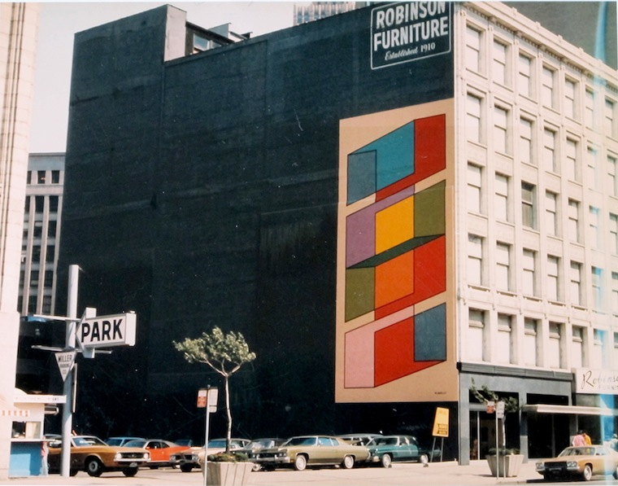
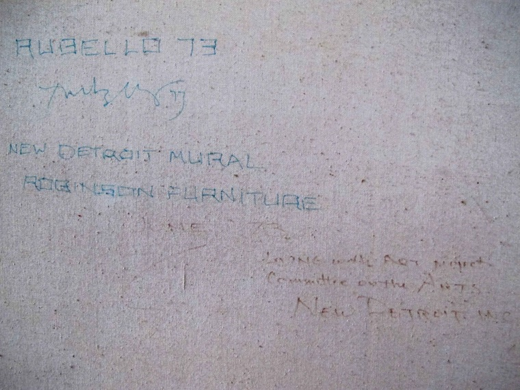

COLOR CUBES
(a).
Rubello's 50' x 25' mural, commissioned by New Detroit, Inc. in 1972 as part of its "Living with Art" initiative, is painted onto 1420 Washington (then known as the Robinson Furniture Building) in 1973. It is executed over the course of one week by two sign painters from the Le Mans Sign Company under the artist's supervision. It is painted over in May, 2014 after 41 years of wear and deterioration.
Upon selecting the site for his mural and considering an appropriate design, Rubello revisits an earlier screenprint, Poetry of Space, and doubles it along its vertical axis.

Color Cubes is described by art historian Dennis Nawrocki in the book Art in Detroit Public Places as:
...a vivacious, shifting display of form and color....a tall, narrow image...fill[ing] just the segment of a large wall nearest the sidewalk and the street. The resulting painting may be read as a four-story stack of blue, yellow, orange, and burnt red cubic shapes aligned along a central spine or axis. Notably, the interlocking cubes seem to shift and flip (the artist describes them as "flippable forms"), alternately appearing solid and transparent, two-dimensional and three-dimensional, and receding and pushing forward. This continuous, restless interplay of geometry, space, and color conveys something of the flux and dynamic energy that underlies the seeming solidity and secure structure of the world.9
(b.)
In June 1973, upon completion of the mural, New Detroit, Inc. requests a smaller version of Color Cubes for display in its downtown offices. Rubello paints one in acrylic and donates it.
That version is found by the author in the Russell Bazaar, a local flea market, in 2009.
See 1973 , 7-Eleven , AMBASSADOR BRIDGE , COLOR , IRRATIONAL GEOMETRY , HOMAGE , IMPERMANENCE , JULIAN C MADISON BUILDING , LIVING WITH ART , SHARON MADISON , MOVEMENT , MURALS , NATIONAL ENDOWMENT FOR THE ARTS , PERCEPTION , PERSPECTIVE , PUBLIC ART , and DAVID RUBELLO